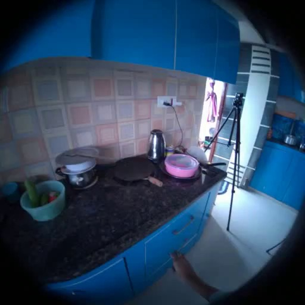
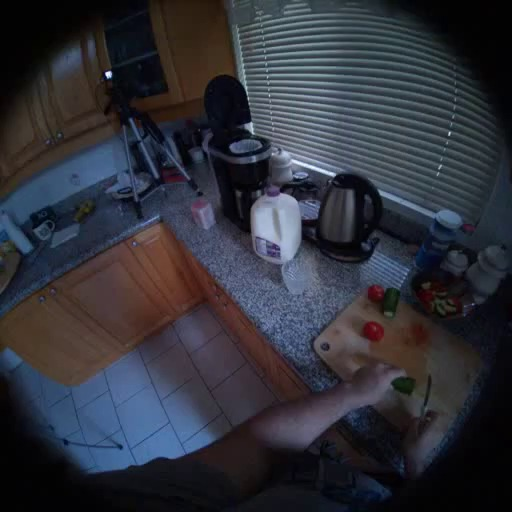
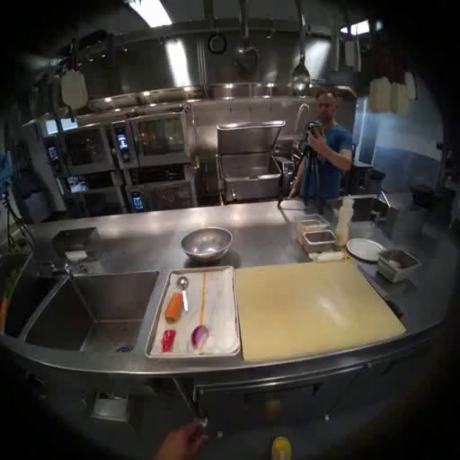
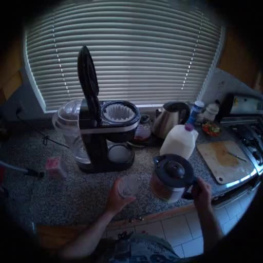
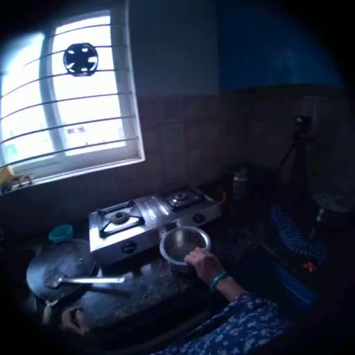

选择 take

1001 Cooking an Omelet
iiith_cooking_111_2
非 Aria 旧结果 + Aria HFOV90 去畸变新结果。

1010 Making Cucumber & Tomato Salad
sfu_cooking025_2
非 Aria 旧结果 + Aria HFOV90 去畸变新结果。

1011 Making Sesame-Ginger Asian Salad
fair_cooking_08_10
非 Aria 旧结果 + Aria HFOV90 去畸变新结果。

1013 Making Coffee latte
sfu_cooking025_7
非 Aria 旧结果 + Aria HFOV90 去畸变新结果。

1015 Making Milk Tea
iiith_cooking_109_5
非 Aria 旧结果 + Aria HFOV90 去畸变新结果。